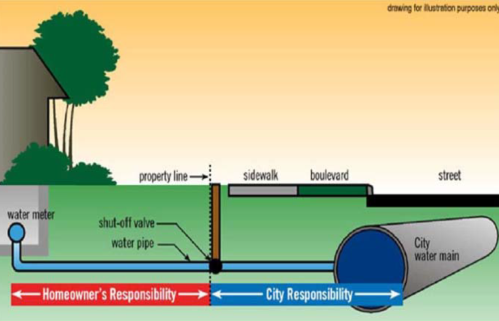
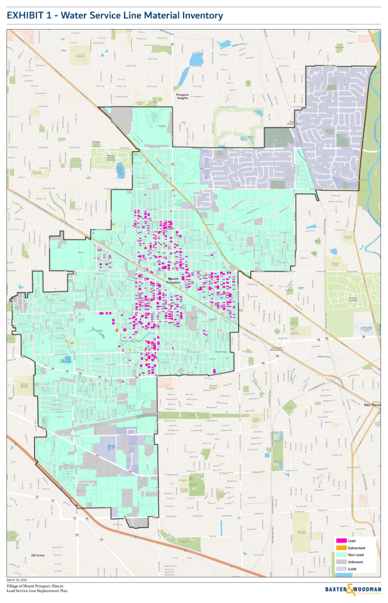

New Rule Gives Insight on Public Health
Lead water service lines have been banned since 1986. The government is finally eliminating them once and for all.
In October 2024, President Biden issued a final rule: remove all lead service lines in the next 10 years. With over 9.2 million lines in America, state and local governments have to scale up their replacement programs to meet this lofty requirement.
Lead pipes can corrode and leach lead into drinking water, which can cause damage to the nervous system, impaired hearing, etc. Children are especially vulnerable to lead contamination and can develop anemia, hyperactivity, slowed growth and other consequences from ingestion. In rare cases, lead poisoning can even lead to seizures and death. Lead service lines are found in houses made before 1986—the year the Safe Drinking Water Act abolished using lead pipes for public water systems. A 2024 study approximated that ⅔ of Chicago children under six years old may be exposed to lead-contaminated water. In 2023, Chicago reported 958 children aged 1-5 years with lead poisoning. The EPA states there is no safe level of lead consumption. The only solution is to replace the lead service lines entirely.
According to Casey Botterman, Mount Prospect Water and Sewer Superintendent, “Illinois is the leader in all states with the most amount of lead in the country.” After Biden’s final rule, the Illinois EPA demanded an inventory from all municipalities regarding their total lead water service lines.
Below is a map of all municipalities with released inventories of their lead water service line counts. Gray municipalities do not have released data. According to The Guardian, Chicago has the most lead service lines of any city in the United States at 400,000 lead service lines. However, their exact service line numbers are not released.
Though Kennilworth has the highest ratio of lead service lines, Elgin has the highest quantity of lead service lines at 10,206.
Increased Funding and Testing
Water service lines are jointly owned by the homeowner and the government. According to Botterman and the Melrose Park service line replacement plan, a homeowner can expect to pay $8,000–$13,000 to replace their portion of a lead water service line before financial assistance.

The homeowner is responsible for the service line from the water meter to the B-Box (used to turn the water service on and off to a property) — Photo used with permission from the city of Geneva.
Due to the high cost, families will put off the project and risk their health. To help the replacement process, the U.S. government pledged to fund 500,000 lead service line replacements from October 2023 to September 2025. This funding helps lower-income municipalities. Currently, there is little perceivable correlation between the percentage of service lines made of lead and the percentage of citizens below the poverty line.
Along with the boosted service line replacement funding, many municipalities are forced to perform more lead and copper tests. These tests are taken from homes with lead water service lines to determine if the water is contaminated with lead. In Cook County, 90 of the 134 municipalities were ordered to increase their tests by January 2025. Hover over the different municipalities to see their required number of tests and their frequency taken.
"

-Photo shows Mount Prospect's homes with lead service lines. Photo from Mount Prospect FOIA Request
Mount Prospect, a Cook County village, currently has 698 lead service lines. The Illinois Environmental Protection Agency (IEPA) ordered Mount Prospect to increase from 30 lead and copper tests every three years to 60 tests twice a year. The requirement will remain in place until all lead service lines are replaced.
“It was a pain to get 30 houses to participate every three years, now I have to get 60 twice a year?” Botterman says. “We’re trying to get rid of it as soon as possible so we won’t have to do the sampling.”
This cumbersome process has motivated Mount Prospect Public Works to shrink its lead service replacement timeline from 15 years to five years. While they do not receive funding from the state, Mount Prospect has an annual $100,000 budget to cover ⅔ of the homeowner’s costs for the replacement. This is on a first-come-first-serve basis, which means homeowners who do not receive funding have historically pushed off the project in the hope of receiving funding later. Mount Prospect Public Works plans to speed up the replacement process by increasing funding to completely cover all replacement costs by 2027.
Both charts show the increase of lead contamination found during Mount Prospect lead and copper tests. Though the contamination level is typically below the MCL, any amount of lead in drinking water is dangerous
Increasing the funding can help ensure long-term health for residents. Similar scenarios are unfolding across America. According to EPA estimates, Biden’s final rule “will prevent up to 900,000 infants from being born with low birthweight, stop up to 200,000 IQ points lost in children and reduce up to 1,500 cases of premature death from heart disease.”
However, President Trump has signaled they may roll back regulations on lead in drinking water. According to the EPA website, the Department of Government Efficiency (DOGE) DOGE has already cut over 400 grants from nine “unnecessary” EPA programs, which totals to $1.7 billion. President Trump has publicly announced plans to cut 65% of the EPA’s budget.
The fate of the lead water service line rules is up in the air. Nevertheless, it is undeniable that lead contamination in drinking water is negatively impacting Cook County residents. Without proper funding and law enforcement, local and state governments may drag their feet when replacing lead service lines—compromising community health in the process.
How I found this data
I used a mixture of Census data, Chicago public records, articles, and FOIA data. To see my sources, check out the story memo
Maps
I had 36 unique municipality spreadsheets, and I manually compiled them into one main document. This required using pivot tables and filtering to get the correct numbers. I also went on census.gov for the population and poverty statistics, and manually added them. Finally, I joined my test quantity spreadsheet to my main spreadsheet using VLOOKUP. Since some municipalities were written differently, I went in afterwards to manually input the data that was not entered. I used Flourish and a Cook County geojson file to create the map.
Service Line Diagram
I called Geneva Public Hall and asked for permission to use the photo for a class project. They granted permission.
Bar Chart and Pie Chart
Since I am from Mount Prospect, I was interested in learning more about my village's specific lead service line efforts. Using FOIA, I received all lab documents regarding the results of the lead and copper results since the program began (2005). I manually entered each address and data number into a spreadsheet. For the bar chart, I cross examined the addresses from the past two tests to see if any houses were reassessed, then joined that data together.